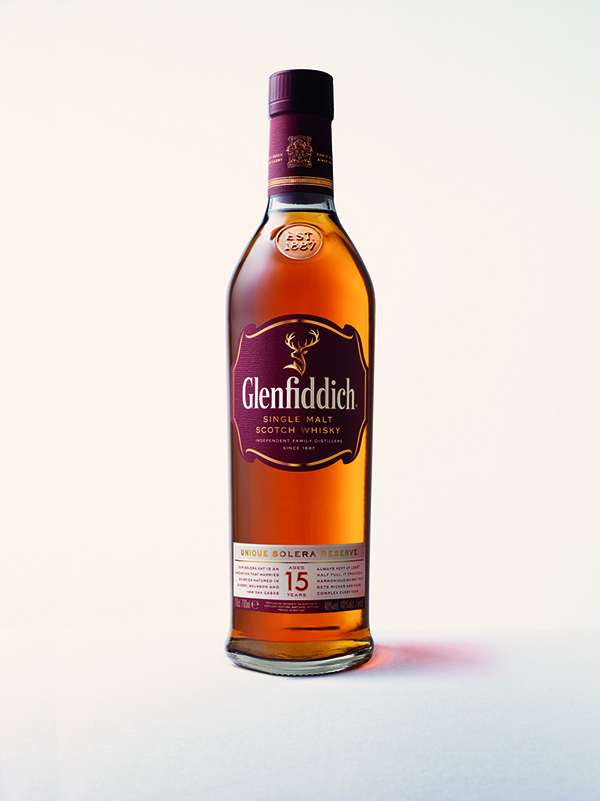

홈 > 브랜드 매거진 > 네슬레
네슬레
네슬레는 스위스의 식음료 브랜드로, 맛, 메뉴 구성, 패키지, 매장 또는 유통 채널이 함께 브랜드 경험을 만드는 영역입니다.
산업 분야 식음료 · 공개 등급 편집 검수 · 브랜드 평가 4.7 ★

한눈에 보는 브랜드
네슬레는 스위스 기반의 식음료 브랜드입니다. 맛, 메뉴 구성, 패키지, 매장 또는 유통 채널이 함께 브랜드 경험을 만드는 영역으로 분류되며, 브랜드명과 업종, 운영 국가, 공개 로고 여부를 함께 보며 사전 항목의 기본 맥락을 확인할 수 있습니다.
브랜드 관점
네슬레 항목은 단순한 이름 목록이 아니라 식음료 시장 안에서 어떤 역할을 하는지 읽기 위한 기준점입니다. 제품·서비스 범위, 유통 방식, 시각 아이덴티티, 시장 포지션을 함께 비교하면 같은 산업의 다른 브랜드와 차이가 선명해집니다.
시작과 성장
앙리 네슬레가 1867년에 설립한 스위스의 식료품 브랜드로, 밀크 파우더를 기반으로 유아식, 유제품, 아이스크림, 초콜릿 및 당류, 가공식품 등을 제조·판매함.
브랜드 아이덴티티
네슬레의 아이덴티티는 브랜드명, 로고 사용 여부, 업종 언어, 국가적 배경을 중심으로 정리됩니다. 대표 로고 자산이 연결되어 있어 시각 식별자를 함께 검토할 수 있습니다.
제품과 서비스
네스카페, 네스퀵, 식수, 네스티, El Chaná, 네스프레소, Vascolet, Café El Águila
현재 상태
타임라인
BI/CI 변천사
함께 읽을 브랜드
식음료 · 자료 기반네스카페 식음료 · 편집 검수버거킹
식음료 · 편집 검수버거킹 식음료 · 편집 검수버드와이저
식음료 · 편집 검수버드와이저 식음료 · 편집 검수켈로그
식음료 · 편집 검수켈로그 식음료 · 편집 검수KFC
식음료 · 편집 검수KFC 식음료 · 자료 기반트라이엄프 인터내셔널
식음료 · 자료 기반트라이엄프 인터내셔널 식음료 · 자료 기반고디바
식음료 · 자료 기반고디바
네스카페는 식음료 브랜드로, 맛, 메뉴 구성, 패키지, 매장 또는 유통 채널이 함께 브랜드 경험을 만드는 영역입니다.
버거킹는 미국의 식음료 브랜드로, 맛, 메뉴 구성, 패키지, 매장 또는 유통 채널이 함께 브랜드 경험을 만드는 영역입니다.
식음료 · 편집 검수버드와이저버드와이저는 식음료 브랜드로, 맛, 메뉴 구성, 패키지, 매장 또는 유통 채널이 함께 브랜드 경험을 만드는 영역입니다.
켈로그는 미국의 식음료 브랜드로, 맛, 메뉴 구성, 패키지, 매장 또는 유통 채널이 함께 브랜드 경험을 만드는 영역입니다.
KFC는 미국의 식음료 브랜드로, 맛, 메뉴 구성, 패키지, 매장 또는 유통 채널이 함께 브랜드 경험을 만드는 영역입니다.
식음료 · 자료 기반트라이엄프 인터내셔널트라이엄프 인터내셔널는 스위스의 식음료 브랜드로, 맛, 메뉴 구성, 패키지, 매장 또는 유통 채널이 함께 브랜드 경험을 만드는 영역입니다.
식음료 · 자료 기반고디바고디바는 벨기에의 식음료 브랜드로, 맛, 메뉴 구성, 패키지, 매장 또는 유통 채널이 함께 브랜드 경험을 만드는 영역입니다.

식음료 · 자료 기반글렌피딕글렌피딕는 영국의 식음료 브랜드로, 맛, 메뉴 구성, 패키지, 매장 또는 유통 채널이 함께 브랜드 경험을 만드는 영역입니다.